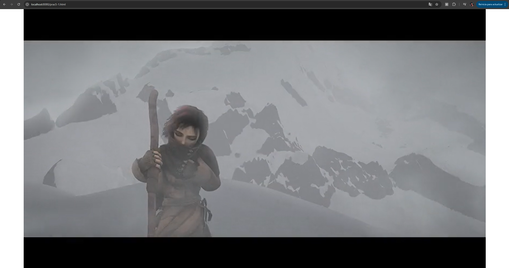
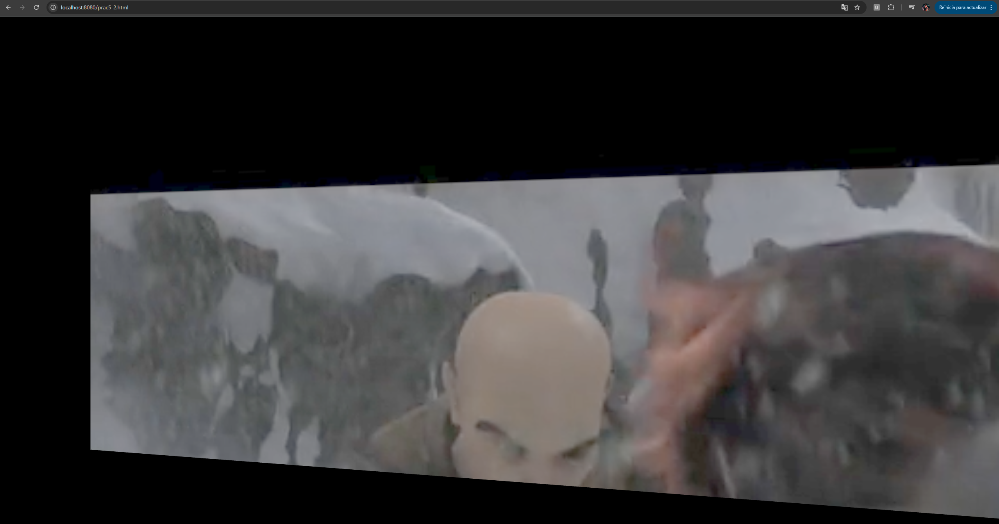

Memoria
Descripción de la práctica
Esta práctica consiste en el desarrollo de varias escenas 3D utilizando la biblioteca Three.js, incorporando además técnicas de distribución de vídeo mediante MPEG-DASH con la librería Dash.js. En primer lugar, se comprueba la correcta reproducción de distintos manifiestos DASH en un elemento de video. Posteriormente, se adapta una escena previa para emplear un vídeo servido mediante MPEG-DASH como textura dinámica sobre un plano dentro de la escena 3D. Finalmente, se actualiza continuamente la textura en tiempo real durante la animación, permitiendo visualizar el vídeo integrado en el entorno 3D.
Preguntas
¿Cuántas codificaciones de audio distintas puede utilizar el cliente para adaptarse a condiciones cambiantes de la red?
En ambos archivos solo se incluye una única codificación de audio por manifiesto. Por lo tanto, el cliente solo puede utilizar una codificación de audio distinta para adaptarse a condiciones cambiantes de la red, lo que limita su capacidad de adaptación en caso de fluctuaciones en la calidad de la conexión.
¿Y de vídeo?
En el primer manifiesto, el de MultiResMPEG2.mpd, se puede elegir entre 3 representaciones con diferentes calidades y anchis de banda. En cambio, en el segundo manifiesto, el de MultiResH264.mpd, se pueden elegir entre 4 representaciones disponibles para adaptarse a la red.
¿Cuántas resoluciones de vídeo distintas puede usar el cliente? Indica cuáles.
Con el primer manifiesto, el de MultiResMPEG2.mpd, el cliente puede usar 3 resoluciones distintas: 512x288, 768x432 y 1280x720. Con el segundo manifiesto, el de MultiResH264.mpd, el cliente puede usar una única resolución: 854x480.
Ejercicio 1
En el primer ejercicio se trabaja con la reproducción de vídeo mediante DASH, utilizando el fichero smi-dash.html. Para ello se configura un reproductor capaz de cargar el contenido multimedia desde un manifiesto y reproducirlo en el navegador adaptando la calidad según las condiciones de red. No se encontraron dificultades relevantes, ya que el material proporcionado en la práctica incluye la estructura base necesaria para realizar la implementación.

Ejercicio 2
En este segundo ejercicio se parte del código de una sesión anterior, concretamente de la escena de la sesión 3, y se adapta para incorporar un vídeo servido mediante MPEG-DASH como textura dinámica en un plano dentro de la escena 3D. No se encontraron dificultades relevantes, ya que el material proporcionado en la práctica incluye la estructura base necesaria para realizar la implementación.
